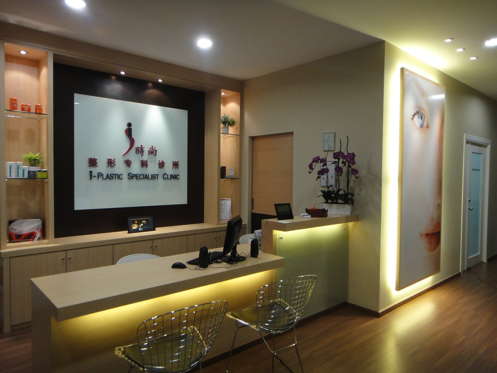

Reconstructive Surgery
Cleft lip and palate repair, skin cancer excision and reconstruction, burn injury care, scar revision and reconstructive microsurgery.
View procedures时尚整形及重建外科诊所
I Plastic Surgery & Reconstructive Surgery Clinic is led by Dr Kueh Nai Siong, a nationally registered consultant plastic surgeon trained at Chang Gung Memorial Hospital, Taiwan. From reconstruction after injury to considered aesthetic surgery, every plan begins with an honest, unhurried consultation.
Plastic surgery covers far more than aesthetics. Our practice spans reconstruction after trauma, burns and cancer, through to body contouring, facial surgery and non-surgical aesthetic treatments — all performed or supervised by Dr Kueh.
Cleft lip and palate repair, skin cancer excision and reconstruction, burn injury care, scar revision and reconstructive microsurgery.
View proceduresDouble eyelid and eyebag surgery, ptosis correction, rhinoplasty, alarplasty, facial contouring, face and neck lift, otoplasty.
View proceduresLiposuction, abdominoplasty and mini tummy tuck, arm lift and thigh lift — shaping that respects proportion and safety.
View proceduresAugmentation with implants or fat grafting, breast lift, reduction, mastectomy and reconstruction, gynaecomastia surgery for men.
View proceduresAutologous fat transfer for the face, breasts, lips and gluteal region — using your own tissue for natural, lasting volume.
View proceduresThread lift, botulinum toxin, hyaluronic acid fillers, PRP, mesotherapy and mole removal — performed in clinic.
View procedures
Dr Kueh is a consultant plastic and reconstructive surgeon based in Kuching. He completed his plastic surgery training at Chang Gung Memorial Hospital in Taiwan — one of Asia's highest-volume centres for reconstructive microsurgery and craniofacial work — and is a National Registration Specialist in Malaysia.
His practice deliberately keeps reconstruction and aesthetics side by side. The same principles apply to both: understand the anatomy, be candid about what surgery can and cannot achieve, and never recommend a procedure a patient does not need.
You meet Dr Kueh directly. We examine, discuss what is realistic, and set out the alternatives — including doing nothing at all.
Technique, anaesthesia, recovery time, risks and costs are explained in writing before you commit to anything. Take it home and think it over.
Procedures are carried out in clinic or at an accredited hospital, with structured follow-up until healing is complete.

Our clinic occupies the first floor of Premier 101 Commercial Centre on Jalan Tun Jugah, a few minutes from Kuching city centre, with parking on site.
Consultations, minor procedures under local anaesthetic and all follow-up visits take place here. Appointments are spaced so that nobody is rushed, and the waiting area is kept quiet and private — many of the concerns people bring to us are personal ones.
Our team speaks English, Mandarin, Hakka and Bahasa Malaysia, so you can discuss your treatment in whichever language you are most comfortable with.
Consultations are held at our Kuching clinic. Surgery requiring an operating theatre and inpatient care is performed at accredited private hospitals.
Send us a message with what you are considering. Our team will arrange a private consultation with Dr Kueh at a time that suits you.